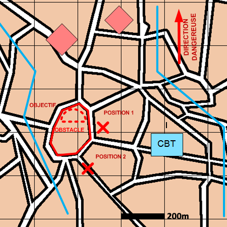

NIVEAU :Automate
ARME :Melee
MISSION :Intercepter
Objectif principal
- Détruire / Neutraliser
Modalités d'exécution
-
Progresser jusqu'à l'objectif :
- Echelon d'éclairage éclaire ;
- GEN en appui mobilité.
-
Préparer et valoriser le plan d'obstacle (optionnel) ;
-
Se poster :
- sur les positions de tir si précisées ;
- dans la zone de l'objectif ou des blocs urbains à proximité sinon.
-
Engager les ennemis dès qu'ils sont détectés dans la zone :
- La mêlée intercepte les éléments ennemis ;
- Le mortier participe aux tirs d'appui.
Schéma de modélisation

Paramètres obligatoires
Fuseau : Zone de responsabilité.
Direction Dangereuse : Orientation privilégiée des capteurs.
Objectif (parmi les objectifs suivants)
Bloc Urbain :
Bloc urbain dans lequel intercepter les ennemis.
Zone :
Zone dans laquelle intercepter les ennemis.
Paramètres optionnels
A partir de: Positions à partir desquelles intercepter.
Point de regroupement
Nombre d'échelons (1 par défaut)
Obstacles: Obstacles à construire.
Valoriser obstacles: Indique si on valorise les obstacles après construction.